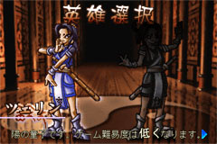
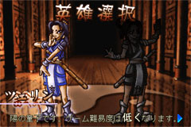

陰陽童子物語 → マニュアル → ゲーム概要
ゲームを開始して、一番最初にキャラクターセレクトがあります。 選べるキャラクターは、 「陽の童子 ツェリン」 「陰の童子 ドージェ」 の二人です。  キャラクターセレクトは、同時に難易度選択もかねています。 「陽の童子 ツェリン」を選ぶと、難易度は低く、 「陰の童子 ドージェ」を選ぶと、難易度は高くなります。 初めてプレイする場合は、「陽の童子 ツェリン」を選び、 ゲームに慣れるとよいでしょう。
ゲームを開始して、一番最初にキャラクターセレクトがあります。 選べるキャラクターは、 「陽の童子 ツェリン」 「陰の童子 ドージェ」 の二人です。

キャラクターセレクトは、同時に難易度選択もかねています。 「陽の童子 ツェリン」を選ぶと、難易度は低く、 「陰の童子 ドージェ」を選ぶと、難易度は高くなります。 初めてプレイする場合は、「陽の童子 ツェリン」を選び、 ゲームに慣れるとよいでしょう。